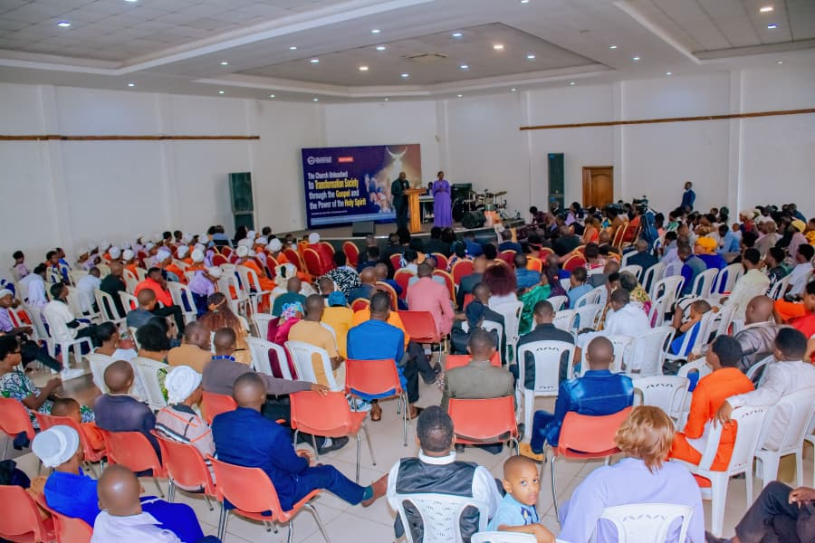

About The Church of Pentecost International Rwanda

The Church of Pentecost International Rwanda (COPIRWA) is a direct branch of The Church of Pentecost (COP), an international Pentecostal denomination with a presence in 213 nations and territories worldwide.
The Church originated from the ministry of Irish missionary Pastor James McKeown in 1937 in the Gold Coast, now Ghana. It officially adopted the name The Church of Pentecost in August 1962 and has since grown into a worldwide movement.
In Rwanda, the ministry began on 12 August 2000 through the missionary work of Ghanaian Pastor Samuel Yaw Antwi (now Apostle), Brother Kalambi Foustin, a Congolese national residing in Burundi, and Brother Jean-Marie Wedundu, who later became the first National Head of the Church in Rwanda.
From its humble beginnings, COPIRWA has continued to grow into a nationwide church, committed to proclaiming the Gospel of Jesus Christ, making disciples, raising Spirit-filled believers and transforming communities.